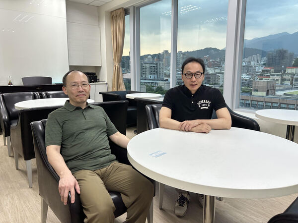
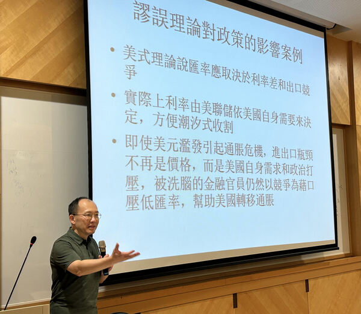
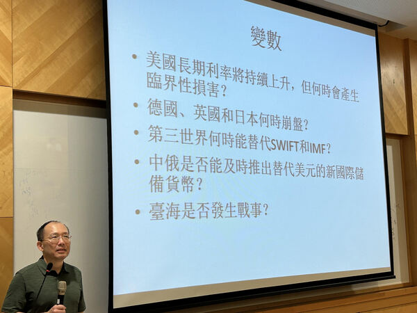
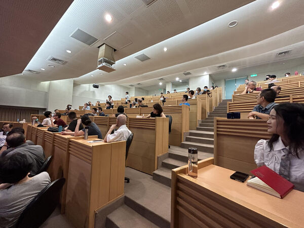

2023-08-25 13:20:00
八年前我曾在北市大給過演講，事後演講稿也發表為博文。下月趁著返臺省親，預定在9月14日和15日下午，再做兩場演講。這次的題目是邀請方指定的，目標聽衆是該校學生，對博客老讀者來説，可能沒有太多新意，大家不必急著參與。
題目及時間如下：
2023/09/14 15:30pm 國際政治與個人事業規劃
2023/09/15 15:30pm 國際金融未來趨勢
地點原定於天母校區行政大樓，七樓運動科學研究所C744 博士班研究室，因參與聽衆人數較多，改為五樓演講廳C507 ( 台北市士林區忠誠路二段101號)。
【後註一，2023/09/16】因應讀者要求，我將兩場演講的PPT稿也發表於博客，並做簡單注解。
【後註二，2023/09/17】演講現場照片若干；第一張是與主辦者郭家樺教授的合影。




【後註三，2023/10/06】今天下午將在成大演講，演講稿沿用《國際金融未來趨勢》，但略有增補，已反映在博客版本。